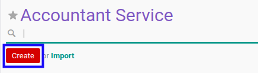
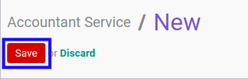

Membuat Accountant Service
A. INPUT
(Tidak ada instruksi khusus)
B. LANGKAH KERJA
- Buka menu Accountant Report -> Configuration -> Accountant Service. Abaikan jika sudah berada pada menu yang dimaksud.
- Klik tombol Create pada bagian atas-kiri form.

- Isi Name. Wajib diisi.
- Isi Internal Reference. Tidak wajib diisi.
- Aktifkan/ Deaktifkan Active. Tidak wajib diisi.
- Aktifkan/ Deaktifkan Assurance Service. Tidak wajib diisi.
- Isi Code. Tidak wajib diisi.
- Pilih Sequence Creation Method. Wajib diisi.
- Beralih ke tab Python Code.
- Isi Python Code for Custom Sequence Generation. Tidak wajib diisi.
- Beralih ke tab Signing Partner.
- Tambah/Modifikasi/Hapus Signing Partner. Ulangi langkah ini sampai Signing Partner sesuai dengan keinginan.
- Beralih ke tab Opinions.
- Aktifkan/ Deaktifkan Opinion Required. Tidak wajib diisi.
- Tambah/Hapus Opinion. Ulangi langkah ini sampai Opinion sesuai dengan keinginan.
- Beralih ke tab Quality Control.
- Tambah/Modifikasi/Hapus Question. Ulangi langkah ini sampai Question sesuai dengan keinginan.
- Beralih ke tab Methods.
- Aktifkan/ Deaktifkan Method Required. Tidak wajib diisi.
- Tambah/Hapus Method. Ulangi langkah ini sampai Method sesuai dengan keinginan.
- Beralih ke tab Policy.
- Pilih Allowed To Confirm. Tidak wajib diisi.
- Pilih Allowed To Validate. Tidak wajib diisi.
- Pilih Allowed To Cancel. Tidak wajib diisi.
- Pilih Allowed To Restart. Tidak wajib diisi.
- Isi Description. Tidak wajib diisi.
- Klik tombol Save pada bagian atas-kiri form.

C. OUTPUT
- Data Accountant Service akan terbuat.